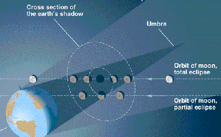
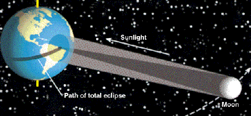
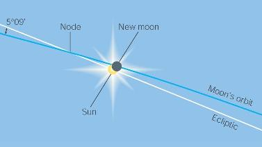
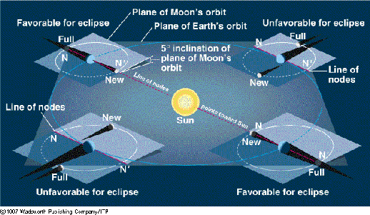
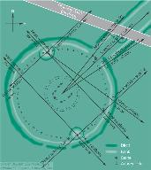
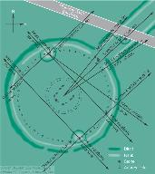

ASTR 1210 (O'Connell) Optional Reading
THE MOON, ECLIPSES, AND STONEHENGE

The lunar phases are only the first
of the unusual but easily observed phenomena associated with the
Moon. Others are eclipses, which we discuss now, polar
precession (covered in Study
Guide 5), and the tides. There is good evidence
that the most remarkable of the ancient megalithic
monuments, Stonehenge, incorporated knowledge of lunar
cycles.
A. ECLIPSES (DARK SHADOWS)
During an eclipse either the Sun or the Moon appears to "go out."
Both can be dramatic events, for properly situated observers on
Earth. In particular, total solar eclipses have tremendous
psychological impact because the Sun seems to disappear with no
guarantee of return. The picture at the top of the page shows a
series of photographs taken before, during, and after a total solar
eclipse.
- There are two types of eclipses: lunar
and solar. They are produced by shadows cast by
the Earth and the Moon, respectively.
- A lunar eclipse occurs when the shadow of the Earth
strikes the Moon
- A solar eclipse occurs when the shadow of the Moon
strikes the Earth
- The geometry of the two kinds of eclipses is illustrated in
the following diagrams. (Click for enlargements):

Lunar Eclipse Geometry

Solar Eclipse Geometry
 Click on the icon for a video [650 KB] of the
Moon's shadow crossing the Earth during an eclipse.
Click on the icon for a video [650 KB] of the
Moon's shadow crossing the Earth during an eclipse.
- Referring to these illustrations and the diagram on Study Guide 4
concerning the phases of the Moon, we see that:
- A lunar eclipse can only occur near Full Moon, and
- A solar eclipse can only occur near New Moon
- The core of the shadow, where solar light is totally blocked, is
called the umbra. The umbra is shown as the dark cone in the
diagrams above. It is surrounded by a larger region (lighter gray
above) with partial blocking, called the penumbra. Eclipses
can therefore be either "total" or
"partial", depending on which part of the shadow
is involved.

Two solar eclipses. (Left) Total eclipse in March 1970 from Virginia.
(Right) Annular eclipse in May 2012 from Texas (J. Thumberger).
Solar Eclipses
- As viewed from the Earth, the Sun and the Moon have nearly the
same angular size, about 0.5 degree.
This similarity of apparent size is merely a coincidence, a
product of the present-day size of the Moon's orbit (which is
continually changing slowly). The Moon and Sun have, of course,
vastly different intrinsic sizes.
This coincidence of sizes permits the occurrence of total solar
eclipses on the Earth, in which the Sun's light is completely
blocked by the Moon. In this circumstance, the umbra of the Moon's
shadow touches the surface of the Earth, as shown in the Solar Eclipse
Geometry diagram above. The Moon just barely blocks all of the
bright surface of the Sun as seen from locations inside the umbra,
which covers only
a small part
of the Earth's surface. As the Moon moves in its orbit, the
umbra sweeps
across the Earth.
For viewers situated in the penumbra, only part of the Sun's surface
will be blocked by the Moon, producing a partial solar
eclipse. Observable effects can be detected without optical
aid for eclipse fractions larger than about 5%. "Annular"
eclipses are produced when the Moon appears to lie entirely
within the Sun's surface; this can occur when the Moon is near its
apogee (farthest from Earth in its orbit).
Partial eclipses are much less dramatic than are total eclipses
because even a small fraction of the Sun's surface produces large
amounts of light; however, they last longer, are more frequent, and
can be seen from a larger part of the Earth's surface.

- At the right is a time lapse video of a total solar eclipse. The Moon
crosses in front of the Sun from right to left. Just as totality
is beginning, the exposure time of the camera was increased and shows
the "diamond ring" effect produced by the last small uncovered parts of
the solar surface.
During a total solar eclipse, when the tremendously bright surface
of the Sun is just blocked by the Moon, we can observe the very
faint structures surrounding the Sun's surface (called the
"chromosphere" and "corona") that are
normally hidden in the glare.
The corona is the irregular white halo surrounding the darkened Sun in
the central frame of the picture at the top of this page.
You can also see the inner corona in the video (a thin
annular glow during totality).
Another
image, showing the corona's more detailed structure, is here.
Although special telescope designs can reject much of the light of the
solar surface, total solar eclipses still offer the best views of the
inner solar atmosphere for ground-based telescopes, so they are
very important events scientifically.
- Total solar eclipses last at most 7 minutes at a given
location and are visible only in
a narrow strip on the Earth's surface (see the Solar Eclipse
Geometry diagram). Relatively few people experience total solar
eclipses.
- If the Moon were more distant from Earth, such that the Sun
appeared much larger than the Moon, there would never be total solar
eclipses. And if the Moon were nearer, so that it appeared much
larger than the Sun, total solar eclipses would last longer and be
more frequent, though they would be be less interesting aesthetically
and scientifically.
Lunar Eclipses
- Lunar eclipses can also be total or partial, depending on the
exact path of the Moon through the Earth's shadow cones (see
this chart of the
Moon's track during a typical total eclipse).

- During a total lunar eclipse, the Moon will become very dim. But
residual sunlight passing through dust layers in Earth's atmosphere
often tints the Moon bloody red, as in the picture at the right; click on
thumbnail for an enlarged view of an eclipse.
- By contrast with a total solar eclipse, a total lunar eclipse can
last up to 1.5 hours and is visible from about 1/2 of the
Earth's surface. Most of Earth's inhabitants (with astronomical
interests) have therefore seen lunar eclipses.

The solar atmosphere during total eclipses. (Left) Coronal streamers
during the February 1998 eclipse (A. Gada, processed by J. Lodriguss).
(Right) Chromosphere showing (red) prominences during August 1999 eclipse
(L. Viatour).
B. ECLIPSE PREDICTION
The basic geometry of eclipses is simple, but predicting their
occurrence and type (total, partial, annular) depends on
understanding the complex nature of the lunar orbit:
- Almost
perfect alignment of the Sun, the Moon and the Earth is needed for
an eclipse.
- The Earth and Sun lie (by definition) in the ecliptic plane
and therefore the Moon must also be in that plane for an eclipse
to occur. (Hence, the origin of the word "ecliptic.")
If the Moon's orbit lay exactly in the plane of the ecliptic, there
would be a total eclipse of the Sun and a total eclipse of the Moon at
each new and full Moon, respectively, each month. Eclipses
would be routine celestial phenomena, and the psychological impact of
solar eclipses would greatly diminish.
- But the Moon's orbit is tilted 5 degrees out of the ecliptic
plane and only crosses the plane at two points, called nodes.
The Moon moves through the two nodes once each month.
5 degrees sounds small, but remember that it is 10 times the angular
diameter of the Moon.
- Therefore, the Moon must be near one of its
nodes and that node must lie almost directly on the line
running from the Sun through the Earth for eclipses to occur.
- Viewed on the celestial sphere from the Earth, the node is where the
Moon's celestial path crosses the ecliptic. See the diagram below
(click for enlargement). Only if the Sun and Moon are both near the
node at the same time can a solar eclipse occur. If the Sun and Moon
are both close to the node but the alignment is not perfect, a
partial eclipse will occur, as in the figure.

- The direction to a node on the celestial sphere (i.e. with respect
to the stars) changes only slowly. Good alignments between the "line
of nodes" and the Sun-Earth line therefore only occur at approximately
6-month intervals. [Equivalently, once the Sun has passed one
node along its ecliptic path, it will not approach the other for 6
months.]
- The perspective drawing below shows the
orientation of the Moon's orbit in 3-D space. Eclipses occur only near
those times when the line of nodes points near the Sun (called
"eclipse seasons" and marked "favorable for eclipse" in the
drawing). On average, there are 2 solar and 2 lunar eclipses each
year.

- Because of gravitational interactions with the Sun, the line of
nodes of the Moon's orbit moves with time, taking 18.6
years to make a complete rotation around the Earth. This produces
an 18-year-long sequence of eclipses called the saros
cycle.
- During the cycle, solar and lunar eclipses occur roughly once
every 6 months. But the dates of the eclipses change and don't repeat
for about 19 years.
- The change in the line of nodes also produces
changes in the extreme northerly or southerly positions of the Moon as
seen from Earth by +/- 5 degrees. This affects, for instance, the
duration of a moonlit night, so that the cycle can be recognized
without necessarily observing eclipses. The saros cycle was
known to many ancient astronomers.

C. STONEHENGE
 Stonehenge, on the Salisbury plain in south-central England, is the
best known of thousands of "megalithic" monuments
surviving from prehistoric times in northern Europe. (Click on the
thumbnail at right for information on megalithic sites in Great
Britain and Ireland.) Very little is known about the people who built
these. Though scholarly debate has raged over the purpose of such
structures, there is good evidence that their builders incorporated
astronomical knowledge of the Sun, Moon, and bright stars in many of
them, including Stonehenge.
Stonehenge, on the Salisbury plain in south-central England, is the
best known of thousands of "megalithic" monuments
surviving from prehistoric times in northern Europe. (Click on the
thumbnail at right for information on megalithic sites in Great
Britain and Ireland.) Very little is known about the people who built
these. Though scholarly debate has raged over the purpose of such
structures, there is good evidence that their builders incorporated
astronomical knowledge of the Sun, Moon, and bright stars in many of
them, including Stonehenge.
 Construction at Stonehenge took place ca. 3100-1500 BC (over 1500
years!) in
several major
phases. This was a massive effort, involving transport of 5 ton
stones up to 240 miles. The image above shows Stonehenge as it might
have appeared in the period 2000-1550 BC.
The current-day
structure consists of a series of concentric circular ditches,
banks, and post-holes with a number of large stones clustered in the
center and a few at the periphery.
Astronomical alignments: there are both
solar and lunar alignments built into Stonehenge.

Construction at Stonehenge took place ca. 3100-1500 BC (over 1500
years!) in
several major
phases. This was a massive effort, involving transport of 5 ton
stones up to 240 miles. The image above shows Stonehenge as it might
have appeared in the period 2000-1550 BC.
The current-day
structure consists of a series of concentric circular ditches,
banks, and post-holes with a number of large stones clustered in the
center and a few at the periphery.
Astronomical alignments: there are both
solar and lunar alignments built into Stonehenge.

- Solsticial Alignments: A line from the
center to the "Heelstone" points to sunrise at the summer
solstice (the northernmost sunrise of the year and the longest day
of the year). The reverse points to sunset at the winter solstice.
The Heelstone is a large, isolated stone lying outside the circular
structures between two parallel banks. [Click on the thumbnail at right
for a chart of the alignments.]
Note that such "solsticial" orientations are not simply
East-West (which is much more common in ancient buildings). The
heelstone is north-east of the center of Stonehenge. A sketch of the
Sun's path as it rises over the heelstone on the summer solstice as
seen from the center is shown below:

- Lunar Alignments: The so-called
"Station Stones" are four stones lying just inside the bank (labeled
"SS" in the plan drawing). Lines
drawn through Station Stones 92 and 93 or 91 and 94
align with the N/S
maxima of the Moon's rise or set during the 18.6-year nodal revolution
cycle.
Diodorus, a Greek historian during the 1st century BC, refers to
a "19 year" cycle associated with Stonehenge and the Moon---almost
certainly the lunar nodal cycle.
British astronomer Fred Hoyle suggested that the circle of 56
"Aubrey Holes" could have been used as an analog computer to track the
motion of the node of the lunar orbit (56 years, or 3 saros cycles, is
required to bring solar eclipses back to approximately the same
locations on Earth's surface), through this idea has since been
discarded.
Stonehenge is situated at a unique latitude: where the lunar and
solar sight lines just described
cross at right angles. It is possible that the Stonehenge
people chose this site for the monument because of this fact.
Before solar and lunar orientations could be built into
Stonehenge, its planners must have observed the sky for many
cycles---in the case of the Moon, many times 19 years. And they
needed a method to pass the information on from one generation to the
next (the lifespan then was only ~30 yrs). No stone, paper, or other
forms of records have been found.
The most obvious stone structures (the massive trilithons, see below)
were constructed last but have no clear astronomical significance.

Web links:
Last modified
June 2014 by rwo
Eclipse images copyright
© Fred
Espenak. Diagrams of eclipse geometry copyright © Brooks-Cole
Publishing Co. Stonehenge images from various sources. Text
copyright © 1998-2014 Robert W. O'Connell. All rights reserved.
These notes are intended for the private, noncommercial use of
students enrolled in Astronomy 1210 at the University of
Virginia.


 Back to Study Guide 5
Back to Study Guide 5
 Guide Index
Guide Index
{kind=link}
{kind=link}
{kind=link}
{kind=link}
{kind=link}
{kind=link}
{kind=link}
{kind=link}
{kind=link}
{kind=link}
{kind=link}
{kind=link}